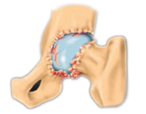

including joint function.
Sharp instrument used to create holes or indentations in bone.
Material used to fix implants to bone during surgery.
Tool used to inject bone cement into the joint space.
Chisel-like instrument used to cut or shape bone.
Drill used to create holes in bone for implant placement.
Forceps used to grasp and stabilize bone during surgical procedures.
Tool used to hold or manipulate bone during surgery.
Hammer-like tool used to drive or tap surgical instruments.
Tool used to trim or shape bone with a nibbling action.
Instrument used to prepare the femoral canal for implant placement.
Spongy, inner bone tissue that supports bone marrow and provides shock absorption.
Device used to apply bone cement during surgery.
Device used to limit the flow of bone cement during application.
Hip implant fixed in place with bone cement.
Hip implant that relies on bone growth for fixation, without the use of cement.
Hip implant with both femoral head and acetabular liner made of ceramic.
Dense, outer layer of bone that provides strength and support.
Enhanced polyethylene liner with improved wear resistance.
Process of placing the acetabular cup in the correct anatomical position.
Reamer specifically used to prepare the acetabular socket.
Instrument used for scraping or debriding bone and tissue.
